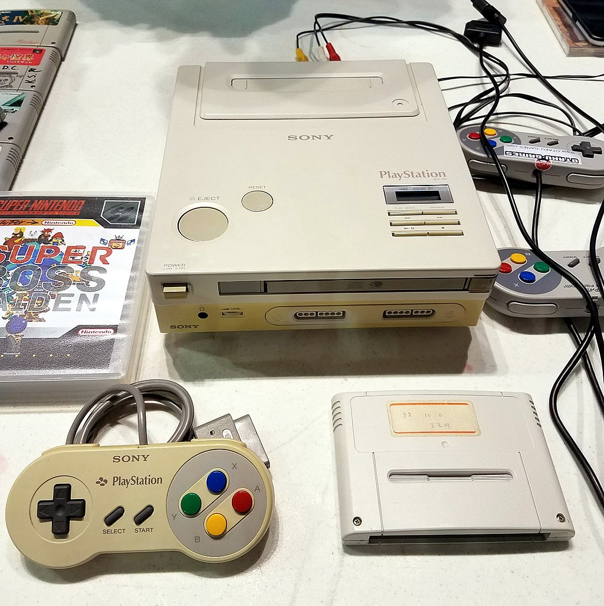
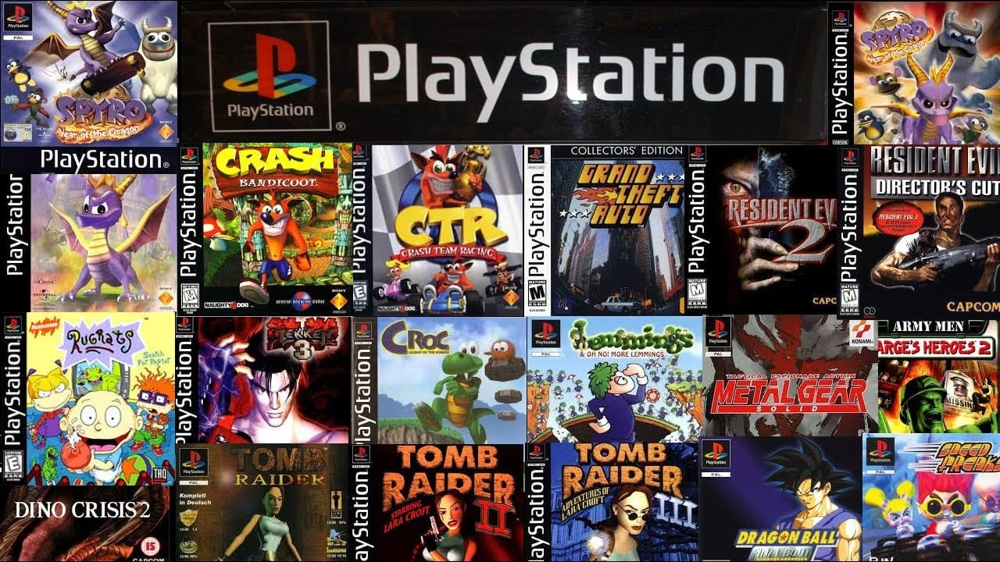

History
The PlayStation(abbreviated as PS, commonly known as the PS1/PS one or its codename PSX) is a home video game console developed and marketed by Sony Computer Entertainment. It was released in Japan on 3 December 1994, in North America on 9 September 1995, in Europe on 29 September 1995, and in Australia on 15 November 1995. As a fifth-generation console, the PlayStation primarily competed with the Nintendo 64 and the Sega Saturn.
Sony began developing the PlayStation after a failed venture with Nintendo to create a CD-ROM peripheral for the Super Nintendo Entertainment System in the early 1990s. The console was primarily designed by Ken Kutaragi and Sony Computer Entertainment in Japan, while additional development was outsourced in the United Kingdom. An emphasis on 3D polygon graphics was placed at the forefront of the console's design. PlayStation game production was designed to be streamlined and inclusive, enticing the support of many third-party developers.
The console proved popular for its extensive game library, popular franchises, low retail price, and aggressive youth marketing which advertised it as the preferable console for adolescents and adults. The PlayStation signalled Sony's rise to power in the video game industry. It received acclaim and sold strongly, in less than a decade, it became the first computer entertainment platform to ship over 100 million units. Its use of compact discs heralded the game industry's transition from cartridges.
Game library
A total of 3,061 PlayStation games have been released worldwide. The PlayStation's bestselling game is Gran Turismo (1997), which sold 10.85 million units. After the PlayStation's discontinuation in 2006, the cumulative software shipment was 962 million units.
The PlayStation featured a diverse game library which grew to appeal to all types of players. The first two games available at launch were Jumping Flash! (1995) and Ridge Racer, with Jumping Flash! heralded as an ancestor for 3D graphics in console gaming. Critically acclaimed PlayStation games included Final Fantasy VII (1997), Crash Bandicoot (1996), Spyro the Dragon (1998), Metal Gear Solid (1998), all of which became established franchises. Final Fantasy VII is credited with allowing role-playing games to gain mass-market appeal outside Japan, and is considered one of the most influential and greatest video games ever made.
At the time of the PlayStation's first Christmas season, Psygnosis had produced around 70% of its launch catalogue, its breakthrough racing game Wipeout was acclaimed for its techno soundtrack and helped raise awareness of Britain's underground music community. Eidos Interactive's action-adventure game Tomb Raider contributed substantially to the success of the console in 1996, with its main protagonist Lara Croft becoming an early gaming icon and garnering unprecedented media promotion. Licensed tie-in video games of popular films were also prevalent, Argonaut Games' 2001 adaptation of Harry Potter and the Philosopher's Stone went on to sell over eight million copies late in the console's lifespan. Third-party developers committed largely to the console's wide-ranging game catalogue even after the launch of the PlayStation 2.
Initially, in the United States, PlayStation games were packaged in long cardboard boxes, similar to non-Japanese 3DO and Saturn games. Sony later switched to the jewel case format typically used for audio CDs and Japanese video games, as this format took up less retailer shelf space (which was at a premium due to the large number of PlayStation games being released), and focus testing showed that most consumers preferred this format.